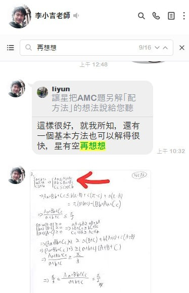
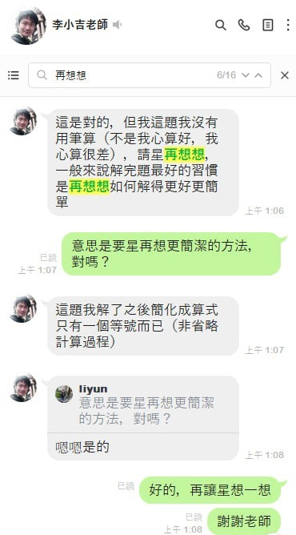

「星媽聊聊天—再想想」
這兩週J71A國七、S101高一的課程都進入了正課，除了一般作業外，老師也都有給思考題。思考題有異於一般題型，需要孩子們動腦去想，甚至去操作看看，我看到老師們在班群內給予上傳作法的孩子們建議，常常都只有一點引導，接著就是希望孩子們再想想看。
不禁讓我回想起，當年帶星在宗翰、硯吉老師的班上，也都有課後思考題，這是星每週最期待的題目了，常常每一題都要耗掉幾小時，甚至幾天思考推敲，寫完他就迫不及待想要上傳給老師，兩位老師的要求都很高，時常就算答案正確，老師也都還會丟一句「再想想」，就像獵豹硯吉老師在清大數培課程授課中告訴我們的，一個題目，做出來之後，還要自己再多檢視，多想想，是否有更好的做法。除此之外，如果一開始星傳的做法是錯的，老師時常也只是給一句「再想想」，我當時不明白，現在才知道老師用心良苦，希望孩子自己絞盡腦汁，找出自己的思路，而不是依賴老師直接給作法給答案。
前陣子有幾位爸爸媽媽跟我聊天時說，在學校很忙，怕可能沒有時間思考獵豹網課的難題，這時我剛好想到宗翰老師說過，簡單題目，就算做再多，除了熟練，意義不大，也難提升孩子程度，所以還是鼓勵孩子們盡量挑戰思考題！
老師提過腦中有兩張計算紙，只要把難題或是不明白的觀念，放在腦中，就算白天需要上學，其實一樣是可以思考的！
「再想想」看似是老師不肯直接給解法，其實隱含著老師對孩子的期許，希望的是激發孩子的潛力，能享受自己想出難題的喜悅！
(有關兩張計算紙一文，日前我有發文，若沒看到，可見底下留言有連結)
https://www.facebook.com/groups/695697124716309/permalink/852634839022536/


